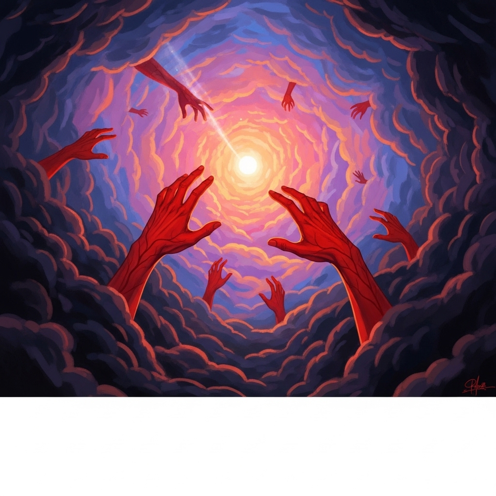

El cuento se enfoca en Jacob Settle, un trabajador de ferrocarril que vive una vida aparentemente simple, pero atormentada por un oscuro secreto. Es conocido por sus colegas como alguien reservado, triste y frecuentemente nervioso. A lo largo del relato, se revela que Jacob cometió un crimen en el pasado: asesinó al amante de su prometida al descubrir su infidelidad. Aunque nunca fue castigado legalmente, vive acosado por el remordimiento y los sueños en los que ve manos ensangrentadas que lo persiguen. El narrador, amigo de Jacob, trata de ayudarlo, pero el peso de la culpa es demasiado grande. Los sueños lo consumen y lo conducen a un estado de delirio. Finalmente, muere en circunstancias misteriosas. El cuento se aleja del horror sobrenatural para centrarse en el terror psicológico, en cómo la conciencia puede convertirse en el peor juez y en cómo la culpa puede destruir a una persona desde adentro.
